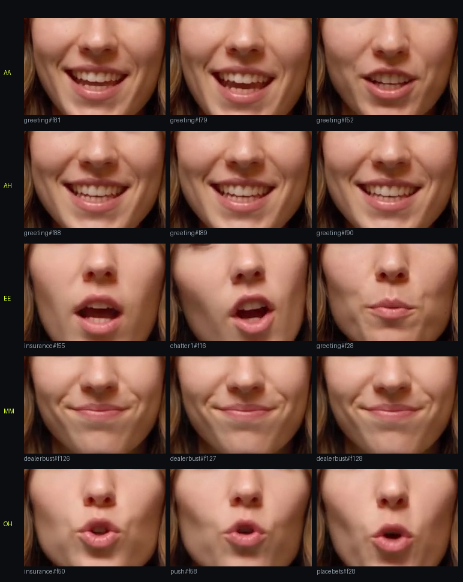
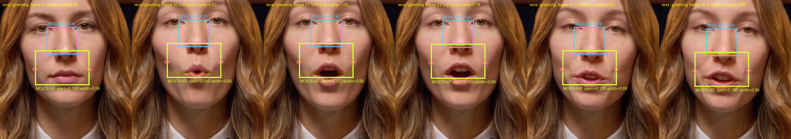
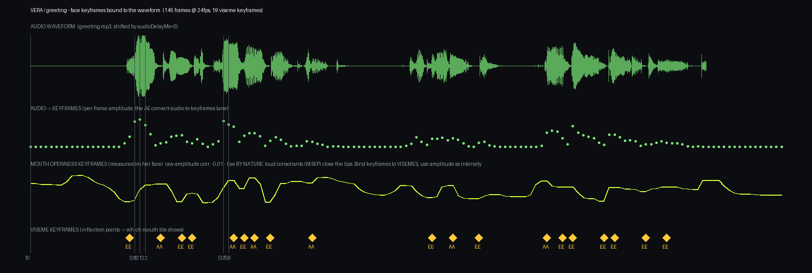

Lipsync Lab
Scout Live Casino · own-stack viseme rig · pilot 1
PILOT · A LINE NO VIDEO MODEL EVER GENERATED
“This table pays three to two and I never miss a beat.” Voice is Vera's ElevenLabs take; the lips are 30 viseme keyframes (kf-001…kf-030) bound to 2 audio wave segments (wav-01/02), rendered by our own compositor from mouth tiles harvested out of her existing footage. Zero generation credits. keyframe JSON
HER VISEME ATLAS · HARVESTED FROM HER OWN TAKES

KEYFRAMES ON THE FACE

WAVEFORM → KEYFRAME BINDING
